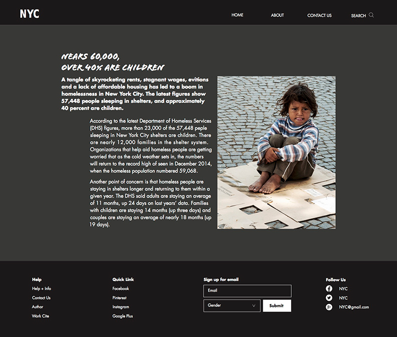
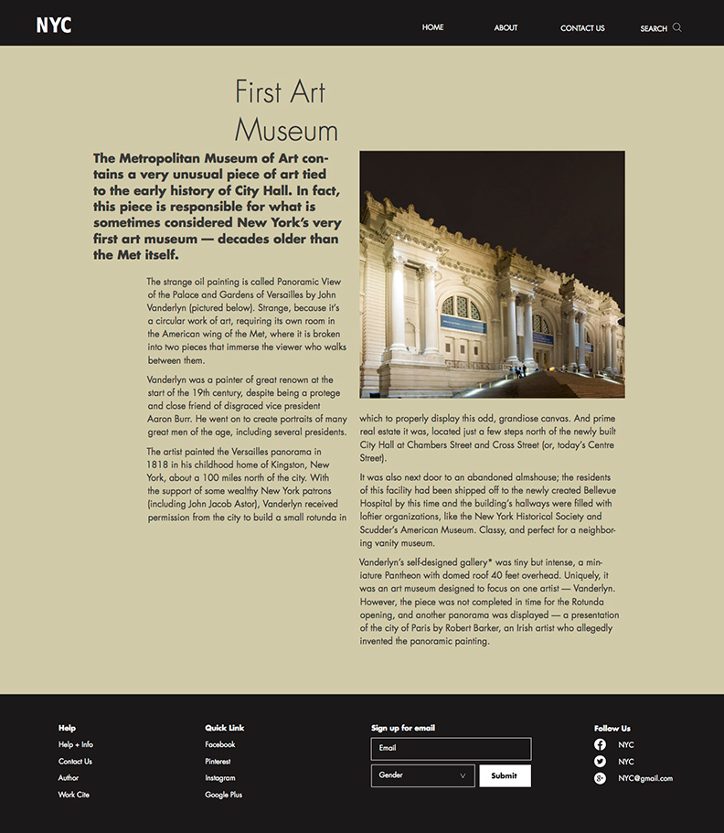
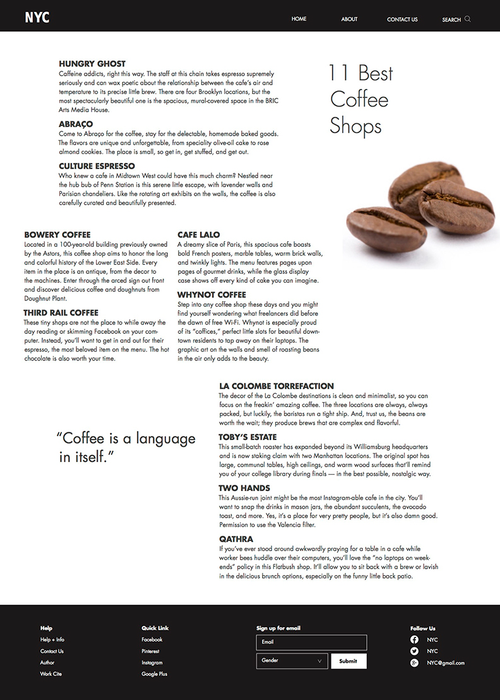

DATE
March, 2016
NYC Web Design
FIELD
Typography, Web Design
INFO
Web design of New York City.
projects.

This project is about a web design of New York City. I chose the concept as the article of New York City. This page is a subpage of a article of homeless people in New York City. In this page I used main color of my design, which are black and gray. For typeface, I used "Futura" as my body text, and one hand writing font as my title.

In the process of design. I did a lot research about articles about New York City. Finally, I chose 9 articles that put in my home page. This is the second subpage of "the First Museum in New York City". Because of this topic, I chose old yellow as my background color to show a feeling of old style. Also, I designed footage for each page, which can link to facebook and so on. The contact information that I also put in the footage. Audience can easy to touch with this website.
